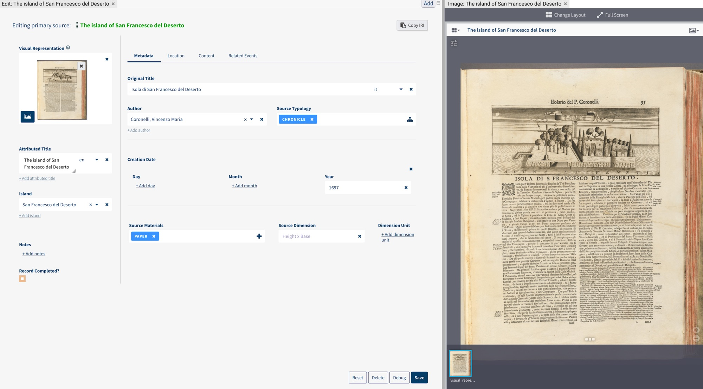
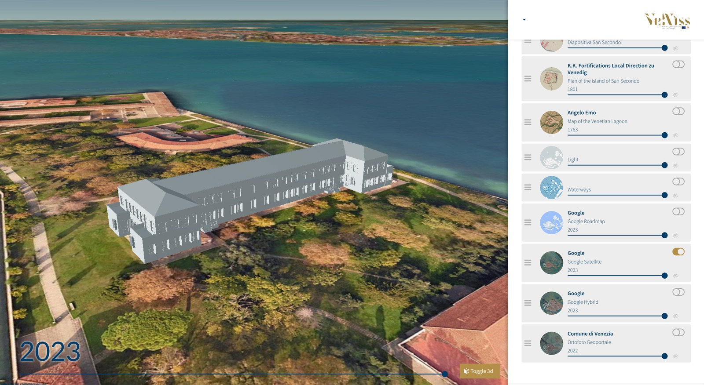
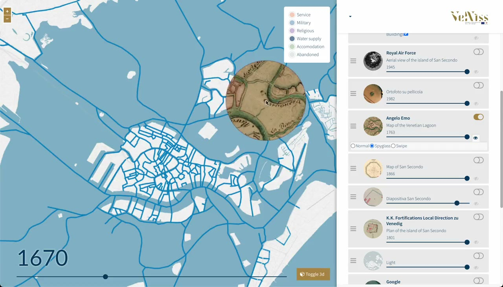
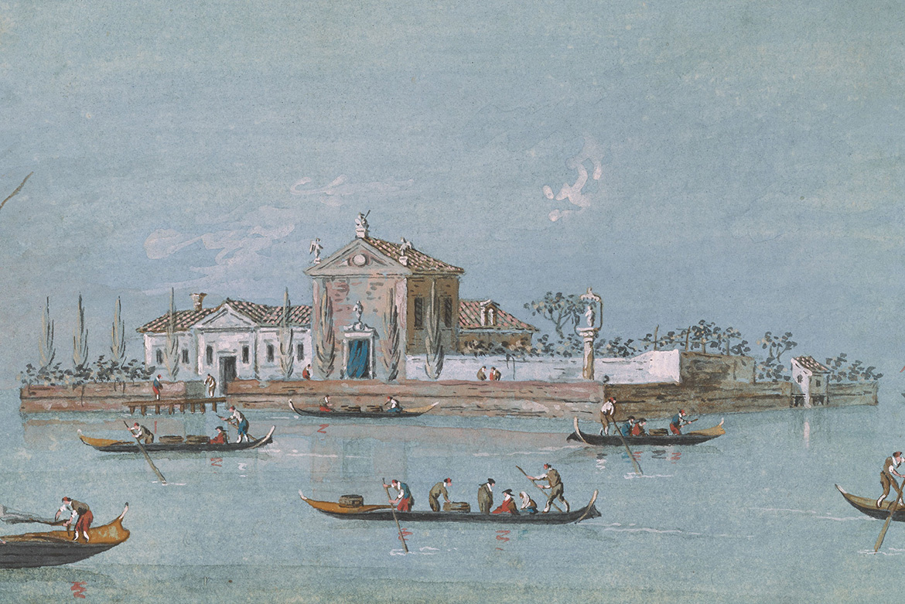

digiTatti
digiTatti
Mapping Connections: Behind the Scenes at the I Tatti Digital Humanities Lab.
Lukas KlicHead of Digital Humanities Research
Remo GrilloDigital Humanities Research Software Engineer
Gianmarco SpinaciDigital Humanities Research Software Engineer
Webinar · 8:30 amWednesday 28 October 2026
today · about 35 minutesthree parts, live demos
The plan.
Metapolis~35 min
III · Florentia Illustrata
talkuse case, with a live demoquestions
why · 01step through with →
A place is a network, through time.
why · 02
A city is not a set of shapes on a map. Our tools mostly see only the shapes.
why · 03how Archipelago and VeNiss started · step through with →
Three people, three outputs, no connection.
Archipelago, 2020: 131 sources, 147 events and 174 people in a database; the geometries in a separate map; the narrative in a text file.
why · 04what we tried
Each tool solves part of the problem.
| tool | good at | missing |
|---|
| Desktop GIS | spatial analysis, drawing | web publishing · links to sources · time beyond “layers” |
| Digital exhibits | web exhibits | only points · no geospatial search |
| Story-map tools | polished visualizations | the author's view only · no data management |
None covers the whole cycle: collect sources → draw → interpret → publish → let others search and reinterpret.
why · 05the research
Years of evidence.
sourcesletters, deeds, maps, drawingsread, transcribed, compared
✓
placesbuildings and their phasesdrawn, dated, georeferenced
✓
peopleowners, builders, residentsidentified and linked
✓
timecenturies of changeevents, phases, dates
✓
what the reader gets
A book, a flat map.
sourcesburied in footnotesno way back to the document
×
placesone final mapthe author's view, fixed
×
searchnot by place and timeno new questions
×
datalocked in silosproprietary formats
×
part twoII / III
NEH Digital Humanities Advancement Grant · built on an open-source research platform
metapolis · 01in one sentence
A map-centric research and publication platform.
one placeArchival, bibliographic and multimedia sources, linked to interpretation, on a map that moves through time.
for scholarsDesigned for non-technical users.
veniss.net · the platform at work
metapolis · 02step through with →
Extend, don't rebuild.
The platform is open source: created at the British Museum, now maintained by its team and community.
metapolis · 03architecture
Drawn once, live on the web map.
Drawa footprint
Storea geometry
Connectlive, no export
Linka building
Exploreon the map
no export stepEdit the drawing, refresh the web map.
another backendGeometries stored inside the graph itself, as for Florentia Illustrata.
metapolis · 04who does what
Everyone works where they are best.
01 · GIS specialistdraws
Footprints on the map, with start and end years.
map
02 · historiandescribes
Buildings, people, events and sources, in web forms.
forms
03 · everyonelinks
Entities to each other, documents to places, notes to relations.
graph
04 · readerexplores
Map, timeline and sources, in the browser.
web
metapolis · 05the data model · step through with →
Relations are entities too.
four entitiesBuilding · Event · Person · Source, each with its own form.
linkedEvery link has a meaning: took place at, owned, documents.
relations are entitiesWith domain, range and notes: not only that a source is connected, but why.
enrichedFrom VIAF, Wikidata, WorldCat and the Getty vocabularies.
an exampleA house in Via dell'Amorino, acquired by Fulvia Targioni Tozzetti, documented by the 1835 cadastre.
metapolisthe map, in four moves
A familiar map, with time and evidence built in.
metapolis · 07sources
Sources on the map, not in footnotes.

IIIFArchival images at full resolution, zoomable.
transcriptionIn web forms, next to the image.
attributionEvery contribution credited to its researcher.
narrativesTexts annotated with links to their entities.
VeNiss: a primary source described next to its image, a bird's-eye view of the island of La Certosa (c. 1650), in the IIIF viewer.
metapolis · 08built to last
Software is ephemeral. Research data should not be.
RDF · Linked Open Data · the ontology travels with the data · open source: github.com/villaitatti/metapolis
part threeIII / III
the same arc for both: question → sources → live → what became possible
florentia illustrata · 01the source not yet public
Florence, parcel by parcel, in 1835.
17681land parcels
Each one linked to its owners, its use and its acquisition.
1835Catasto Generale Toscano
The first geometric cadastre of the city.
1knowledge graph
Open data from Belli, Lucchesi and Raggi (FUP 2022), turned into a graph.
Overlays: the c. 1850 plan of the city and the 2023 orthophoto (Regione Toscana) · florentiaillustrata.net
florentia illustrata · 02step through with →
From a table row to a graph.
startOne row of the 1835 cadastre.
1 · entitiesA parcel, an acquisition, a person.
2 · co-ownersEight family members, one acquisition.
3 · a personLeads to all of their parcels.
florentia illustrata · live not yet publicownership
- demo
- a parcel
- its owners
- one owner
- all their parcels
florentiaillustrata.net · Via dell'Amorino, parcel 1005
click the page to use itkeys go to the page · click outside it, then →
new tab ↗
Loading Florentia Illustrata…It needs a login: present from the demo server (node demo-server.mjs), then log in inside the frame.
florentia illustrata · 03beyond spatial data · AIUCD 2026
The cadastre records no gender. The graph can find it.
the cadastreno gender field
wife of“moglie di”
first namesan open list
+79 women3 of them nuns
gender mapone query, one layer
estimates, not certaintiesHomonyms and identities are not resolved yet.
the paperAndreose, Grillo, Spinaci, “Beyond Spatial Data”, AIUCD 2026.
florentia illustrata · 04interactive
What women owned, and how much.
show
urban buildings
commercial
open spaces
open spaces, green
religious buildings
casa
casa e corte
ingresso
ingresso e casa
fabbricato
palazzo
womenmenparcels, 1835
mostly homesCasa and casa e corte: most of what women owned.
far fewerAbout 1,100 urban-building parcels, against more than 9,000.
almost neverShops, open spaces, religious buildings.
Andreose, Grillo, Spinaci, “Beyond Spatial Data”, AIUCD 2026 · doi:10.6092/unibo/amsacta/8980
florentia illustrata · 05quote
“A query becomes a layer, a category becomes a dynamic legend.”
Andreose, Grillo, Spinaci, “Beyond Spatial Data”, AIUCD 2026
florentia illustrata · live new: storiesgender and property in 1835 Florence
- demo
- open the story
- one step, one map state
- the map follows the text
- leave it and explore
florentiaillustrata.net · story: gender and property in 1835 Florence
click the page to use itkeys go to the page · click outside it, then →
new tab ↗
Loading the story…It needs a login: present from the demo server (node demo-server.mjs). If the story does not open, use Stories in the site header.
florentia illustrata · 06what became possible
A table became a city you can question.
01owners, citywideEvery parcel of a person, across Florence, in one click.
02new questionsA gender history of property, from a source that records no gender.
03storiesArguments told as sequences of live map states.
04through time in progress1835 → 2011 → 2026: which buildings survived, disappeared, or were merged.
05same data modelNo change to the model: a query became a layer.
Reframing the lagoon city as an archipelago, 16th–21st centuries.
ERC Starting Grant2023 – 2027 · no. 101040474
60+ islandsfive centuries of the lagoon
Ludovica Galeazzoprincipal investigator
Padova · Firenze · I Tattithree research teams
veniss.eu · the platform: veniss.net
veniss · 01methodology · veniss.eu
Seven work packages, one infrastructure.
VeNiss2023 – 2027
WP1 · bibliographic research
WP2 · iconographic research
WP7 · digital research infrastructure
historical researchsurvey, mapping, modellingthe platform, built at I Tatti
veniss · 02from a database to a graph
Archipelago in 2020, VeNiss today.
sources
events
people
islands + buildings
VeNiss, October 2026Archipelago database, 2020
7551entries in the graph
and also1,698 archival units · 2,203 images · 27 georeferenced historical maps.
veniss.net database overview, October 2026, including records still in progress · Archipelago database export, March 2020.
veniss · 03beyond Florentia
What VeNiss adds.

01 · 3D in progressBuildings in three dimensions
Survey → 3D model → on the map: models that follow the timeline.

02 · layersHistorical maps, layered
27 georeferenced maps, compared with swipe and spyglass.
03 · formsCollective input
Three research teams, one graph: every entry through web forms.
veniss · 04drag the picture
Then and now: Madonna del Monte.


thentoday
compare
on the platformThe same gestures work on the map, over georeferenced historical maps.
sixty islandsMany were abandoned; some are now ruins.
Historical views and photographs: VeNiss project.
veniss · 053D in progress
The Lazzaretto Vecchio, phase by phase.
veniss.net · Lazzaretto Vecchio in 3D
from survey to mapLaser scan → 3D model → shown on the map.
on the timeline35 buildings in 131 phases, from 1870 to 2024.
ghost footprintsBuildings not yet surveyed stand as open walls: their height is unknown.
veniss · live not yet publicmaps, layers, 3D
- demo
- a historical map
- transparency & spyglass
- swipe
- the timeline
- Lazzaretto Vecchio in 3D
veniss.net/resource/veniss:Main
click the page to use itkeys go to the page · click outside it, then →
new tab ↗
Loading VeNiss…It needs a login: present from the demo server (node demo-server.mjs), then log in inside the frame.
veniss · liveforms: collective input
- demo
- an island
- its phases and sources
- edit, in a form
- saved and attributed
veniss.net · island: Lazzaretto Vecchio
click the page to use itkeys go to the page · click outside it, then →
new tab ↗
Loading VeNiss…It needs a login: present from the demo server (node demo-server.mjs), then log in inside the frame.
veniss · 06the lagoon and public health · step through with →
Isolation made the islands the place for quarantine.
three centuries
1423The Senate decrees a hospital for the plague-stricken.
Lazzaretto Vecchio
1429Enlarged with eighty more rooms.
Lazzaretto Vecchio
1468A second island, for quarantine: preventing contagion.
Lazzaretto Nuovo
1759Declared unusable: decay, bad air, silted canals.
Lazzaretto Nuovo
From the VeNiss knowledge graph (records in progress).
veniss · 072020
Archipelago, in pieces.
sourcesa database131 sources · 147 events · 174 people
×
geometriesa separate mapseparate files, no link to the sources
×
narrativetext, elsewhereno way to the map or the documents
×
2026
VeNiss, one graph.
sources7,500+ entriesentered through forms by three teams
✓
geometriesdrawn once, live on the web mapislands and buildings in phases, in 2D and 3D
✓
timefive centuries, one timeline27 historical maps that follow it
✓
 digiTatti
digiTatti
Places as networks, through time, in one place. Thank you.
Lukas Klic · Remo Grillo · Gianmarco Spinaci — dh.itatti.harvard.edu · NEH HAA-287761-22 · ERC 101040474 · built on an open-source research platform